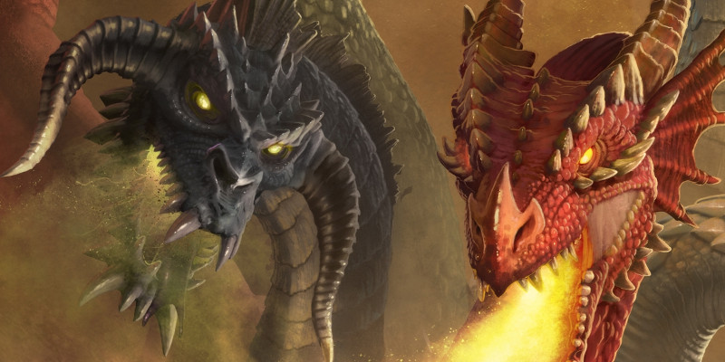

Options draconiques
Ce document présente 3 options de race comme une alternative au drakéide du Manuel des Joueurs, et une nouvelle version du kobold pour PJ.
Avec également de nouveaux dons et des nouveaux sorts.
Races draconiques
La race de drakéide dans le Manuel des Joueurs est une manière de créer un personnage qui aurait des dragons parmi ses lointains ancêtres. Ce document offre trois variantes de races drakéides que vous pouvez choisir à la place, si vous souhaitez créer un personnage avec un lien plus clair envers un ancêtre draconique spécifique, ainsi qu’une nouvelle version de l’option de la race de kobold. Lorsque vous créez un personnage avec l’une de ces options de race, utilisez les règles décrites dans le paragraphe « Créer votre personnage » ci-après pour compléter les détails de votre personnage.
Créer votre personnage
Lorsque vous créez votre personnage, vous décidez s'il appartient à la race humaine ou à l'une des races fantastiques du jeu. Vous pouvez également choisir l'une des races draconiques suivantes. Si vous créez un personnage en utilisant une option de race présentée ici, suivez ces règles supplémentaires lors de la création du personnage.
Augmentation de caractéristiques
Lorsque vous déterminez vos valeurs de caractéristiques, augmentez une de ces valeurs de 2 et augmentez-en une autre de 1, ou augmentez trois valeurs de 1. Suivez cette règle quelle que soit la méthode que vous utilisez pour déterminer les caractéristiques (lancers de dés ou achat par points). La section Création rapide de la classe de votre personnage propose des suggestions pour les valeurs à augmenter. Vous êtes libre de suivre ces suggestions ou de les ignorer. Quelles que soient les valeurs que vous décidez d'augmenter, aucune ne peut être au-dessus de 20.
Langues
Votre personnage peut parler, lire et écrire le commun et une autre langue que vous et votre MD reconnaissez comme appropriée pour le personnage. Le Manuel des Joueurs propose une liste de langues répandues parmi lesquelles choisir. Le MD est libre d'ajouter ou de supprimer des langues de cette liste pour une campagne particulière.
Type de créature
Chaque créature de D&D, y compris chaque personnage joueur, a une entrée spéciale dans les règles qui identifie son type de créature. La plupart des personnages joueurs sont de type humanoïde. Les options présentées ici indiquent de quel type de créature est votre personnage.
Voici une liste des types de créatures du jeu par ordre alphabétique : aberration, artificiel, bête, céleste, dragon, élémentaire, fée, fiélon, géant, humanoïde, monstruosité, mort-vivant, plante, vase. Ces types n'ont pas de règles spécifiques liées, mais certaines règles du jeu affectent les créatures de certains types de différentes manières. Par exemple, la description du sort soins spécifie que le sort ne fonctionne pas sur une créature de type créature artificielle.
Drakéide chromatique
Un drakéide avec une ascendance chromatique hérite de la puissance élémentaire brute des dragons chromatiques. Les vives couleurs de ceux-ci (noir, bleu, vert, rouge ou blanc) brillent sur leur peau écailleuse et dans l’énergie mortelle de leur souffle. Ils sont la brutale furie élémentaire du volcan, des vents arctiques mordants, des orages furieux, ou bien encore le subtil murmure des marais et de la forêt, corrosif et toxique.
Traits
Vous obtenez les traits raciaux suivants.
Type de créature. Vous êtes un humanoïde.
Taille. Votre taille est Moyenne (M).
Vitesse. Votre vitesse de base est de 9 mètres.
Ascendance chromatique. Votre ascendance remonte à un dragon chromatique, ce qui vous donne une affinité magique spéciale. Choisissez un type de dragon dans la table ci-dessous. Cela détermine le type de dégâts caractérisant vos autres traits, comme indiqué dans la table.
| Dragon | Type de dégâts |
| Noir | Acide |
| Bleu | Foudre |
| Vert | Poison |
| Rouge | Feu |
| Blanc | Froid |
Souffle. Lorsque vous effectuez l’action Attaquer, vous pouvez remplacer une de vos attaques par un souffle d’énergie magique sur une ligne de 9 mètres de long et de 1,50 mètre de large. Toutes les créatures dans la zone doivent effectuer un jet de sauvegarde de Dextérité dont le DD est égal à 8 + votre modificateur de Constitution + votre bonus de maîtrise. En cas d'échec, une créature subit 2d8 dégâts du type correspondant à votre ascendance chromatique, ou la moitié de ces dégâts en cas de réussite. Ces dégâts augmentent de 1d8 lorsque vous atteignez le niveau 5 (3d8), le niveau 11 (4d8) et le niveau 17 (5d8). Vous pouvez utiliser cette capacité un nombre de fois égal à votre bonus de maîtrise, et vous récupérez toutes les utilisations dépensées à la fin d’un repos long.
Résistance draconique. Vous avez la résistance au type de dégâts correspondant à votre Ascendance chromatique.
Protection chromatique. À partir du niveau 3, vous pouvez dépenser une action pour invoquer votre énergie draconique afin de vous protéger. Pendant 10 minutes, vous devenez immunisé contre le type de dégâts correspondant à votre Ascendance chromatique. Une fois que vous avez utilisé cette capacité, vous devez terminer un repos long avant de pouvoir l'utiliser à nouveau.
Drakéide métallique
[ Cette race a ensuite été publiée dans sa version finale dans le Fizban’s Treasury of Dragons ]
Drakéide de gemmes
Les drakéides d’ascendance de gemmes partagent l’héritage de tous les dragons de gemmes, qui se disent les héritiers de Sardior, le dragon de rubis, le premier né de toute la création, façonné par Bahamut et Tiamat durant les premiers jours du Premier Monde. Les couleurs et les pouvoirs mystérieux des dragons de gemmes (améthyste, cristal, émeraude, saphir et topaze) brillent sur leur peau écaillée et coulent dans leurs veines. Ils sont les merveilles de l’esprit, la force de la volonté, la lumière brillante de la perspicacité et la sécheresse du désespoir.
Traits
Vous obtenez les traits raciaux suivants.
Type de créature. Vous êtes un humanoïde.
Taille. Votre taille est Moyenne (M)
Vitesse. Votre vitesse de base est de 9 mètres.
Ascendance de gemmes. Votre généalogie remonte à un dragon de gemmes, ce qui vous octroie une affinité magique spéciale. Choisissez un type de dragon dans la table ci-dessous. Cela déterminera le type de dégât caractérisant vos autres traits, comme indiqué dans la table.
| Dragon | Type de dégâts |
| Améthyste | Force |
| Cristal | Radiant |
| Émeraude | Psychique |
| Saphir | Tonnerre |
| Topaze | Nécrotique |
Souffle. Lorsque vous effectuez l’action Attaquer, vous pouvez remplacer une de vos attaques par un souffle d’énergie magique dans un cône de 4,50 mètres. Chaque créature dans la zone doit effectuer un jet de sauvegarde de Dextérité dont le DD est égal à 8 + votre modificateur de Constitution + votre bonus de maîtrise. En cas d’échec, une créature subit 2d8 dégâts du type correspondant à votre ascendance de gemmes, ou la moitié de ces dégâts en cas de réussite. Ces dégâts augmentent de 1d8 au niveau 5 (3d8), au niveau 11 (4d8) et au niveau 17 (5d8). Vous pouvez utiliser cette capacité un nombre de fois égal à votre bonus de maîtrise et vous récupérez toutes les utilisations dépensées lorsque vous terminez un repos long.
Résistance draconique. Vous avez la résistance au type de dégâts correspondant à votre Ascendance de gemmes.
Esprit psionique. Vous pouvez parler par télépathie à toute créature située à 9 mètres ou moins de vous et que vous pouvez voir. Vous n’avez pas besoin de connaître un langage parlé par cette créature mais celle-ci doit être capable de comprendre au moins un langage. Votre communication ne permet pas à la créature de vous répondre par télépathie.
Envol de gemmes. À partir du niveau 3, vous pouvez utiliser votre action bonus pour invoquer temporairement des gemmes spectrales correspondant à votre ascendance de gemmes qui se déploient en forme d’ailes et qui se maintiennent pendant 1 minute. Pour cette durée, vous gagnez une vitesse de vol égale à votre vitesse de base et vous pouvez rester en vol stationnaire. Une fois que vous avez utilisé cette capacité, vous devez terminer un repos long avant de pouvoir l'utiliser à nouveau.
Kobold
Parmi les plus petites créatures draconiques à arpenter les plans, les kobolds affichent leur héritage draconique dans la lueur de leurs écailles et leur rugissement. Certaines légendes parlent des premiers kobolds émergeant de l’Outreterre près des antres des premiers dragons. Dans certaines contrées, les kobolds servent des dragons chromatiques ou métalliques, les vénérant même parfois comme des êtres divins. Dans d’autres, les kobolds savent trop bien à quel point ces dragons peuvent être dangereux et aident les autres espèces à se protéger contre les destructions qu’ils engendrent.
Quelle que soit leur relation avec les dragons, les écailles des kobolds ont en général la couleur de la rouille, même si certains kobolds arborent parfois des écailles dont la couleur est plus proche de celles des dragons chromatiques ou métalliques. Le rugissement d’un kobold peut exprimer toute une variété d’émotion : colère, détermination, exaltation, peur et bien d’autres encore. Quelle que soit l’émotion exprimée, le rugissement d’un kobold vibre d'une puissance draconique.
Traits
Vous obtenez les traits raciaux suivants.
Type de créature. Vous êtes un humanoïde.
Taille. Votre taille est Petite (P)
Vitesse. Votre vitesse de base est de 9 mètres.
Vision dans le noir. Jusqu’à 18 mètres, vous pouvez voir dans une zone de lumière faible comme s’il s’agissait de lumière vive et dans les ténèbres comme s’il s’agissait de lumière faible. Vous ne distinguez les couleurs dans les ténèbres que comme des nuances de gris.
Héritage draconique. La connexion des kobolds avec les dragons peut se manifester de manière imprévisible chez chaque individu. Lorsque vous créez un kobold, choisissez une des options d’héritage suivantes :
- Vous avez un avantage aux jets de sauvegarde pour résister à l'état effrayé ou pour en sortir.
- Vous connaissez un sort mineur issu de la liste de sorts d’ensorceleur. L’Intelligence, la Sagesse ou le Charisme peuvent être la caractéristique d’incantation pour ce sort mineur (vous la choisissez lorsque vous sélectionnez cette race)
- Vous pouvez effectuer une attaque sans arme avec votre queue. Lorsque vous touchez, cette attaque inflige 1d6 + votre modificateur de Force dégâts contondants au lieu des dégâts contondants normaux d’une attaque sans arme.
Rugissement draconique. Par une action bonus, vous poussez un rugissement vers vos ennemis situés à 3 mètres de vous ou moins. Jusqu’à la fin de votre prochain tour, vous et vos alliés avaient un avantage aux jets d'attaque contre n’importe laquelle de ces créatures qui a pu entendre votre rugissement. Vous pouvez utiliser cette capacité un nombre de fois égal à votre bonus de maîtrise et vous récupérez toutes les utilisations dépensées lorsque vous terminez un repos long.
Dons
Un don représente un personnage qui maîtrise l'une de ses capacités ou découvre la capacité de faire quelque chose de complètement nouveau. Lorsque cette maîtrise provient d'une source draconique (que ce soit le cadeau d'un vrai dragon, la manifestation d'un héritage draconique, la bénédiction d'un dieu draconique ou la conséquence de la mort d'un vrai dragon), elle peut avoir des effets surnaturels dramatiques.
Don des dragons chromatiques
Vous avez manifesté certains des pouvoirs des dragons chromatiques, ce qui vous offre les avantages suivants :
- Par une action bonus, vous pouvez toucher une arme simple ou de guerre et lui imprégner l'un des types de dégâts suivants : acide, froid, feu, foudre ou poison. Pendant la minute suivante, l'arme inflige 1d4 dégâts supplémentaires du type choisi lorsqu'elle touche. Une fois que vous avez utilisé cette capacité, vous devez terminer un repos long avant de pouvoir l'utiliser à nouveau.
- Lorsque vous subissez des dégâts d'acide, de froid, de feu, de foudre ou de poison, vous pouvez utiliser votre réaction pour vous donner une résistance à ce type de dégâts. Vous pouvez utiliser cette réaction un nombre de fois égal à votre bonus de maîtrise, et vous récupérez toutes les utilisations dépensées lorsque vous terminez un repos long.
Don des dragons métalliques
Vous avez manifesté certains des pouvoirs des dragons métalliques, ce qui vous offre les avantages suivants :
- Vous apprenez le sort soins. Vous pouvez lancer ce sort sans dépenser d'emplacement de sort. Une fois que vous avez lancé ce sort de cette manière, vous devez terminer un repos long avant de pouvoir le lancer de nouveau. Vous pouvez également lancer ce sort en utilisant des emplacements de sorts dont vous disposez. La caractéristique d'incantation est l'Intelligence, la Sagesse ou le Charisme lorsque vous le lancez avec ce don (vous la choisissez quand vous prenez le don).
- Vous pouvez faire apparaître des ailes protectrices qui peuvent vous protéger ou protéger les autres des attaques. Lorsque vous, ou une autre créature que vous pouvez voir à 1,50 mètre ou moins de vous, êtes touché par un jet d'attaque, vous pouvez utiliser votre réaction pour faire apparaître des ailes spectrales dans votre dos pour un petit moment. Lancez un d4 et accordez à la cible un bonus à la CA égal au nombre obtenu, ce qui pourrait faire rater l'attaque. Vous pouvez utiliser cette réaction un nombre de fois égal à votre bonus de maîtrise, et vous récupérez toutes les utilisations dépensées lorsque vous terminez un repos long.
Don des dragons de gemmes
Vous avez manifesté certains des pouvoirs des dragons de gemmes, ce qui vous offre les avantages suivants :
- Augmentez votre valeur d'Intelligence, de Sagesse ou de Charisme de 1, jusqu'à un maximum de 20.
- Lorsque vous subissez des dégâts d'une créature qui se trouve à 3 mètres ou moins de vous, vous pouvez utiliser votre réaction pour émettre de l'énergie télékinésique. La créature qui vous a infligé ces dégâts doit réussir un jet de sauvegarde de Force (DD égal à 8 + votre bonus de maîtrise + le modificateur de la caractéristique augmentée par ce don) ou subir 2d8 dégâts de force et être repoussée à 3 mètres de vous. Vous pouvez utiliser cette réaction un nombre de fois égal à votre bonus de maîtrise, et vous récupérez toutes les utilisations dépensées lorsque vous terminez un repos long.
Sorts
Cette section contient de nouveaux sorts que le MD peut ajouter à une campagne, ce qui les rend disponibles aux personnages joueurs et aux monstres lanceurs de sorts.
Transformation draconique
niveau 7 - transmutation
Temps d'incantation : 1 action bonus
Portée : personnelle
Composantes : V, S, M (une statuette de dragon, d'une valeur d'au moins 500 po)
Durée : concentration, jusqu'à 1 minute
Avec un rugissement, vous tirez parti de la magie des dragons pour vous transformer et obtenir diverses capacités draconiques. Vous bénéficiez des avantages suivants jusqu'à la fin du sort :
- Vous avez vision aveugle à 9 mètres. Dans cette portée, vous pouvez voir tout ce qui n’est pas derrière un abri total, même si vous êtes aveuglé ou dans des ténèbres. De plus, vous pouvez voir une créature invisible, à moins que la créature ne réussisse à se cacher.
- Des ailes incorporelles jaillissent de votre dos, vous donnant une vitesse de vol de 12 mètres.
- Lorsque vous lancez ce sort, et en tant qu'action bonus lors des tours suivants pendant la durée du sort, vous pouvez expirer une bouffée d'énergie scintillante dans un cône de 9 mètres. Chaque créature dans la zone doit effectuer un jet de sauvegarde de Dextérité, subissant 3d8 dégâts de force en cas d'échec, ou la moitié de ces dégâts en cas de réussite.
Druide, Ensorceleur, Magicien
Bouclier en platine de Fizban
niveau 6 - abjuration
Temps d'incantation : 1 action
Portée : 18 mètres
Composants : V, S, M (une écaille de dragon de platine, d'une valeur d'au moins 500 po)
Durée : concentration, jusqu'à 1 minute
Vous créez un champ de lumière argentée qui entoure une créature de votre choix à portée (vous pouvez vous choisir). Le champ diffuse une lumière faible dans un rayon de 1.50 mètre. Par une action bonus lors des tours suivants, vous pouvez déplacer le champ sur une autre créature à 18 mètres ou moins du champ. La créature protégée par le champ obtient les avantages suivants :
- Elle bénéficie d'un abri partiel.
- Elle a la résistance aux dégâts d'acide, de froid, de feu, de foudre et de poison.
- Si la créature est soumise à un effet qui lui permet d'effectuer un jet de sauvegarde de Dextérité pour ne subir que la moitié des dégâts, la créature ne subit aucun dommage en cas de réussite, et seulement la moitié des dégâts en cas d'échec.
Ensorceleur, Magicien
Foulée emflammée
niveau 3 - transmutation
Temps d'incantation : 1 action bonus
Portée : personnelle
Composantes : V, S
Durée : concentration, jusqu'à 1 minute
Les flammes gonflées d'un dragon recouvrent vos pieds, vous accordant une vitesse explosive. Pendant toute la durée du sort, votre vitesse augmente de 6 mètres et vous déplacer ne provoque pas d'attaque d'opportunité. Lorsque vous vous déplacez à moins de 1,50 mètre d'une créature ou d'un objet qui n'est ni porté ni tenu, il subit 1d6 dégâts de feu dus à votre traînée de chaleur. Une créature ou un objet ne peut subir ces blessures qu'une seule fois par tour.
Aux niveaux supérieurs. Lorsque vous lancez ce sort en utilisant un emplacement de sort de niveau 4 ou supérieur, augmentez votre vitesse de 1,50 mètre pour chaque niveau d'emplacement au-delà du niveau 3. De plus, le sort inflige 1d6 dégâts de feu supplémentaires pour chaque niveau d'emplacement supérieur au niveau 3.
Artificier, Rôdeur, Ensorceleur, Magicien
Givre d'Icingdeath
niveau 2 - évocation
Temps d'incantation : 1 action
Portée : personnelle (cône de 4,50 mètres)
Composantes : S, M (un flacon d'eau de fonte)
Durée : instantanée
Une explosion d'énergie glacée émane de vous dans un cône de 9 mètres. Chaque créature dans cette zone doit effectuer un jet de sauvegarde de Constitution. En cas d'échec, elle subit 3d8 dégâts de froid et est couverte de glace pendant 1 minute ou jusqu'à ce qu'une créature utilise son action pour briser la glace sur elle-même ou sur une autre créature. Une créature couverte de glace voit sa vitesse réduite à 0. En cas de réussite, une créature ne subit que la moitié de ces dégâts et ne souffre d'aucun effet supplémentaire.
Aux niveaux supérieurs. Lorsque vous lancez ce sort en utilisant un emplacement de sort de niveau 3 ou supérieur, augmentez les dégâts de froid de 1d8 pour chaque niveau d'emplacement au-delà du niveau 2.
Ensorceleur, Magicien
Malice de Nathair
niveau 2 - illusion
Temps d'incantation : 1 action
Portée : 18 mètres
Composantes : S, M (un morceau de croûte d'une tarte aux pommes)
Durée : concentration, jusqu'à 1 minute
Vous remplissez un cube de 6 mètres d'arête centré sur un point que vous choisissez à portée avec de la magie féerique et draconique. Lancer un d4 sur la table ci-dessous pour déterminer l'effet magique produit. Au début de chacun de vos tours, vous pouvez déplacer le cube de 3 mètres ou moins et relancer un d4 sur la table.
| d4 | Effet |
| 1 | Une odeur de tarte aux pommes remplit l'air et chaque créature dans le cube doit réussir un jet de sauvegarde de Sagesse ou vous la charmez jusqu'au début de votre prochain tour. |
| 2 | Des bouquets de fleurs apparaissent tout autour, et chaque créature dans le cube doit réussir un jet de sauvegarde de Dextérité ou être aveuglée jusqu'au début de votre prochain tour, les fleurs pulvérisant de l'eau sur leurs visages. |
| 3 | Chaque créature dans le cube doit réussir un jet de sauvegarde de Sagesse ou se mettre à rire jusqu'au début de votre prochain tour. Une créature qui rit est incapable d'agir et utilise tous ses mouvements pour se déplacer dans une direction aléatoire. |
| 4 | Des gouttes de mélasse apparaissent et planent dans le cube, le transformant en terrain difficile jusqu'au début de votre prochain tour. |
Barde, Ensorceleur, Magicien
Lance psychique de Raulothim
niveau 4 - enchantement
Temps d'incantation : 1 action
Porté : 36 mètres
Composantes : V
Durée : instantanée
Vous lancez une lance scintillante de pouvoir psychique depuis votre front sur une créature que vous pouvez voir à portée. Vous pouvez également prononcer le nom de la créature. Si la cible nommée est à portée, elle ne bénéficie d'aucun avantage d'abri ou d'invisibilité lorsque la lance s'y fixe. Si la cible nommée n'est pas à portée, la lance se dissipe et l'emplacement de sort n'est pas dépensé. La cible doit réussir un jet de sauvegarde d'Intelligence ou subir 10d6 dégâts psychiques et être incapable d'agir jusqu'au début de votre prochain tour.
Aux niveaux supérieurs. Lorsque vous lancez ce sort en utilisant un emplacement de sort de niveau 5 ou supérieur, les dégâts augmentent de 1d6 pour chaque niveau d'emplacement au-delà du niveau 4.
Barde, Ensorceleur, Magicien, Occultiste
Convocation d'esprit draconique
niveau 5 - invocation
Temps d'incantation : 1 action
Portée : 18 mètres
Composantes : V, S, M (un objet d'art provenant du trésor d'un dragon, d'une valeur d'au moins 500 po)
Durée : concentration, jusqu'à 1 heure
Vous invoquez un esprit draconique. Il se manifeste dans un espace inoccupé que vous pouvez voir à portée. Cette forme corporelle utilise le bloc de stat ci-dessous. Lorsque vous lancez ce sort, choisissez une famille de dragons : chromatiques, métalliques ou de gemmes. La créature ressemble à un dragon de la famille choisie, ce qui détermine certains traits de son bloc de stat. La créature disparaît lorsqu'elle tombe à 0 point de vie ou lorsque le sort se termine.
La créature est votre allié et celui de vos compagnons. En combat, la créature partage votre initiative, mais elle prend son tour immédiatement après le vôtre. Elle obéit aux ordres verbaux que vous lui donnez (aucune action n'est requise de votre part). Si vous ne lui donnez aucun ordre, elle effectue l'action Esquiver et utilise son mouvement pour éviter le danger.
Aux niveaux supérieurs. Lorsque vous lancez ce sort en utilisant un emplacement de sort de niveau 6 ou plus, utilisez le niveau supérieur partout où le niveau du sort apparaît dans le bloc de stat.
Druide, Ensorceleur, Magicien
Esprit draconique
Dragon de taille GPoints de vie 50 + 10 pour chaque niveau de sort supérieur au niveau 5
Vitesse 9 m, vol 24 m, nage 9 m
19 (+4)
14 (+2)
17 (+3)
10 (+0)
14 (+2)
14 (+2)
Résistances aux dégâts (de gemmes seulement) force, nécrotique, psychique, radiant et tonnerre
Immunités aux états charmé, effrayé, empoisonné
Sens vision aveugle 9 m, vision dans le noir 18 m, Perception passive 12
Langues draconique et comprend les langues que vous parlez
Puissance - (0 PX) Bonus de maîtrise égal à votre bonus
Résistance partagée. Lorsque vous convoquez le dragon, choisissez l'une de ses résistances aux dégâts. Vous avez la résistance au type de dégâts choisi jusqu'à la fin du sort.
Attaques multiples. Le dragon utilise son Arme de souffle et effectue un nombre d'attaques de morsure et de griffes égal à la moitié du niveau du sort (arrondi à l'inférieur).
Morsure et griffes. Attaque au corps à corps avec une arme : votre modificateur d'attaque avec un sort au toucher, allonge 3 m, une cible. Touché : 1d6 + 4 + le niveau du sort dégâts perforants.
Arme de souffle. Le dragon exhale un flux d'énergie multicolore dans un cône de 9 mètres. Chaque créature dans cette zone doit effectuer un jet de sauvegarde de Dextérité, subissant 2d6 d'un type de dégâts auquel ce dragon résiste (selon votre choix) en cas d'échec, ou la moitié de ces dégâts en cas de réussite.

Traduit par Gwavana et blueace, relu par Jpp